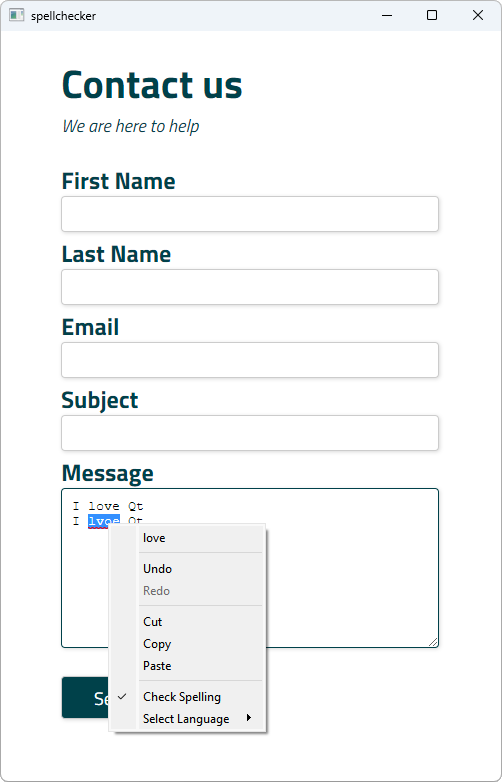

WebEngine Widgets Spellchecker Example
Integrates a spellchecker into a simple HTML form.

Spellchecker demonstrates how to integrate spellchecking support into an HTML form that enables users to submit spellchecked messages.
Running the Example
To run the example from Qt Creator, open the Welcome mode and select the example from Examples. For more information, visit Building and Running an Example.
Dictionaries
To be able to check the spelling, we need to provide the spellchecker with dictionaries. The Qt WebEngine spellchecker supports dictionaries provided by the Hunspell project on all platforms and native dictionaries provided by macOS. In this example, we want to support the English and German languages.
For Hunspell dictionaries to be supported they have to be compiled into a special binary format. A Hunspell dictionary consists of two files:
- A
.dicfile that is a dictionary containing words for the language - An
.afffile that defines the meaning of special flags in the dictionary
These two files can be converted into the bdic format by using the qwebengine_convert_dict tool that is shipped together with Qt.
In this example, we are going to compile en_US and de_DE dictionaries. However, the real full dictionaries would take too much space for the purposes of this example. Therefore, we have created two dummy dictionaries that contain the following words and can be used to demonstrate the conversion process:
- English dictionary: I, you, he, she, it, we, they, love, loves, qt
- German dictionary: ich, du, er, sie, es, wir, ihr, sie, Sie, liebe, liebst, liebt, lieben, liebt, qt
Each word in a dictionary can be prefixed with q. For more information about how to create dic and aff files, see the Hunspell dictionary file format specification in the Hunspell Project.
See the Spellchecker feature documentation for how dictionary files are searched.
We specify the QMAKE_EXTRA_COMPILERS parameter in the project file to add a conversion step to the build process:
qtPrepareTool(CONVERT_TOOL, qwebengine_convert_dict, "", "", $$[QT_INSTALL_LIBEXECS])
debug_and_release {
CONFIG(debug, debug|release): DICTIONARIES_DIR = debug/qtwebengine_dictionaries
else: DICTIONARIES_DIR = release/qtwebengine_dictionaries
} else {
DICTIONARIES_DIR = qtwebengine_dictionaries
}
dict_base_paths = en/en-US de/de-DE
for (base_path, dict_base_paths) {
dict.files += $$PWD/dict/$${base_path}.dic
}
dictoolbuild.input = dict.files
dictoolbuild.output = $${DICTIONARIES_DIR}/${QMAKE_FILE_BASE}.bdic
dictoolbuild.depends = ${QMAKE_FILE_PATH}/${QMAKE_FILE_BASE}.aff
dictoolbuild.commands = $${CONVERT_TOOL} ${QMAKE_FILE_IN} ${QMAKE_FILE_OUT}
dictoolbuild.name = Build ${QMAKE_FILE_IN_BASE}
dictoolbuild.CONFIG = no_link target_predeps
QMAKE_EXTRA_COMPILERS += dictoolbuild
To set up a dictionary, we run qwebengine_convert_dict passing the file path of the dictionary dic and bdic files. The aff file and optional delta file are also picked up by the convert process. The output bdic file is placed into the qtwebengine_dictionaries local directory (or Resources directory), which the application binary will run from.
Setting the Spellchecker
The constructor of our class is trivial.
WebView::WebView(QWidget *parent) : QWebEngineView(parent) { m_spellCheckLanguages["English"] = "en-US"; m_spellCheckLanguages["German"] = "de-DE"; QWebEngineProfile *profile = page()->profile(); profile->setSpellCheckEnabled(true); profile->setSpellCheckLanguages({"en-US"});
We define simple mapping between our dictionary filenames and the actual language display name. We will use that mapping to display names of dictionaries in the context menu. Spellchecking is disabled by default. Therefore we also enable spellchecker and set the English dictionary. When Qt WebEngine's spellcheck service initializes, it will try to load the bdict dictionaries and to check them for consistency. Any errors are logged by using the qWarning() function.
Switching the Spellchecking Language
The current language used for spellchecking is defined per profile, and can get set using the QWebEngineProfile::setSpellCheckLanguage method. When the user clicks on an underlined misspelled word, the default context menu displays up to four suggestions. Selecting one will replace the misspelled word. We could reimplement a number of suggestions, by overriding QWebEngineView::contextMenuEvent and using QWebEngineContextMenuData::spellCheckerSuggestions, but we will demonstrate how to add langague options in the context menu instead:
void WebView::contextMenuEvent(QContextMenuEvent *event) { QWebEngineContextMenuRequest *data = lastContextMenuRequest(); Q_ASSERT(data); if (!data->isContentEditable()) { QWebEngineView::contextMenuEvent(event); return; } QWebEngineProfile *profile = page()->profile(); const QStringList &languages = profile->spellCheckLanguages(); QMenu *menu = createStandardContextMenu(); menu->addSeparator(); QAction *spellcheckAction = new QAction(tr("Check Spelling"), nullptr); spellcheckAction->setCheckable(true); spellcheckAction->setChecked(profile->isSpellCheckEnabled()); connect(spellcheckAction, &QAction::toggled, this, [profile](bool toogled) { profile->setSpellCheckEnabled(toogled); }); menu->addAction(spellcheckAction); if (profile->isSpellCheckEnabled()) { QMenu *subMenu = menu->addMenu(tr("Select Language")); const QStringList keys = m_spellCheckLanguages.keys(); for (const QString &str : keys) { QAction *action = subMenu->addAction(str); action->setCheckable(true); QString lang = m_spellCheckLanguages[str]; action->setChecked(languages.contains(lang)); connect(action, &QAction::triggered, this, [profile, lang](){ profile->setSpellCheckLanguages(QStringList()<<lang); }); } } connect(menu, &QMenu::aboutToHide, menu, &QObject::deleteLater); menu->popup(event->globalPos()); }
Above, we get the QWebEngineContextMenuData instance using the QWebEnginePage::contextMenuData method. We use it to be notified when the user clicks on an editable field and show the Check Spelling item in the context menu. Moreover, if spellchecking is enabled, we also add the Select Language submenu with the supported languages. When an action is triggered, we set the language with the QWebEngineProfile::setSpellCheckLanguage call.